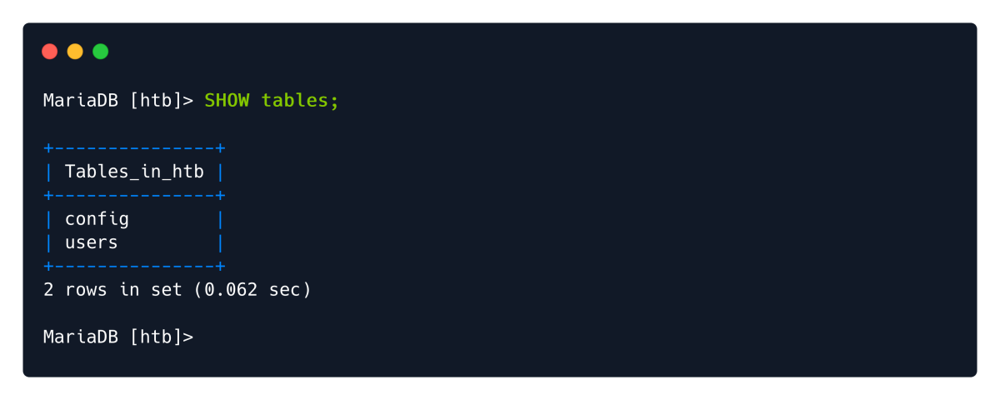

mysql
sudo apt update && sudo apt install mysql*
We should try without password for misconfigurations.

Essential Navigation Commands:
SHOW databases; : Prints out the databases we can access.
USE {database_name}; : Set to use the database named {database_name}.
SHOW tables; : Prints out the available tables inside the currentdatabase.
SELECT * FROM {table_name}; : Prints out all the data from the table {table_name}.


